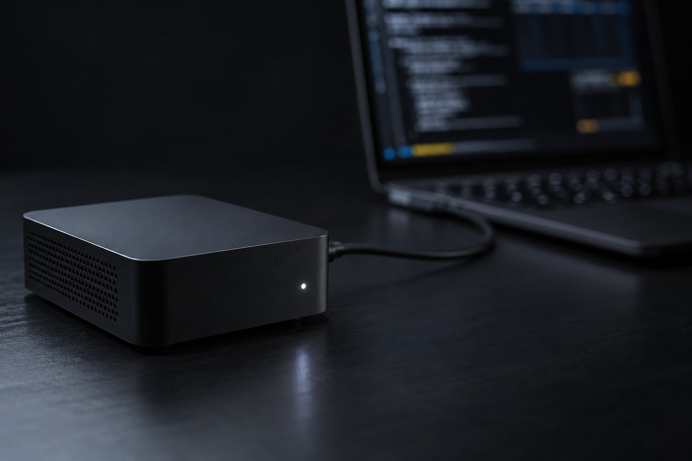

Formación WebMCP · curso 1 de 6 · 8 clases
Servidor MCP de tu servicio, probado y en la revisión vigente
Tools que el agente llama, con confirmación cuando hay consecuencias, token cuando es remoto y prueba automática al final. Todo en la revisión 2026-07-28 de MCP, con el SDK oficial (v2, 2.3.1), en un kit que corre en tu máquina sin costo y sin clave.
- 8clases cortas
- 2026-07-28revisión de MCP que se enseña
- 2.3.1versión del SDK oficial en el kit
- 0claves de API y costo
Las clases
Cada clase termina en un comando que tú ejecutas y en una salida que puedes comparar. El kit está en el propio repositorio del curso.
 Clase 1 · 15 minAnatomía: tools, resources y prompts; client, server y transportAntes de escribir código, separa las piezas. El server MCP ofrece tres cosas (tools, resources y prompts), el client vive dentro de la aplicación con el modelo, y el transport es solo el caño. En esta clase conectas un client al server del kit y ves cada pieza listada.
Clase 1 · 15 minAnatomía: tools, resources y prompts; client, server y transportAntes de escribir código, separa las piezas. El server MCP ofrece tres cosas (tools, resources y prompts), el client vive dentro de la aplicación con el modelo, y el transport es solo el caño. En esta clase conectas un client al server del kit y ves cada pieza listada.
Clase 2 · 20 minPrimer servidor stdio con el SDK oficial, probado en el InspectorLa forma más sencilla de conectar un servicio a un agente es stdio: el client inicia tu programa y conversa por stdin y stdout. En esta clase instalas el kit con versiones fijas, lees el servidor de grupos y llamas a la tool de dos maneras: con un client de prueba y con el MCP Inspector en modo línea de comandos.- Clase 3 · 20 minDiseñar una buena tool: nombre, descripción, JSON Schema, idempotencia, solo lectura × con consecuenciaEl modelo elige la tool leyendo el nombre, la descripción y el esquema; el cliente decide si pide aprobación leyendo las anotaciones. Una tool mal diseñada se llama en el momento equivocado o con el argumento equivocado. En esta clase compruebas, con un script, si tus tools dicen lo que hacen y lo que cambian.
 Clase 4 · 20 minStreamable HTTP sin estado: server/discover, encabezados Mcp-Method y Mcp-NamePara que el servicio atienda a varios clientes en una URL, el transporte es Streamable HTTP. En la revisión 2026-07-28 quedó sin estado: no hay sesión que guardar, cada solicitud lleva lo que necesita. En esta lección levantas el mismo servidor por HTTP y hablas con él con curl, incluso equivocándote a propósito.
Clase 4 · 20 minStreamable HTTP sin estado: server/discover, encabezados Mcp-Method y Mcp-NamePara que el servicio atienda a varios clientes en una URL, el transporte es Streamable HTTP. En la revisión 2026-07-28 quedó sin estado: no hay sesión que guardar, cada solicitud lleva lo que necesita. En esta lección levantas el mismo servidor por HTTP y hablas con él con curl, incluso equivocándote a propósito.- Clase 5 · 20 minPedir un dato al usuario a mitad de la llamada: MRTR (InputRequiredResult)Reservar, pagar, borrar: una acción con consecuencias pide el sí de una persona. En la revisión 2026-07-28 el servidor ya no abre una solicitud propia para preguntar. Devuelve input_required, el cliente le pregunta al usuario y repite la llamada con la respuesta. En esta lección ves las dos vueltas y el camino del no.
 Clase 6 · 20 minAutorización: OAuth con iss (RFC 9207), scope mínimo, secreto fuera del repoUn servidor HTTP en internet sin token es una tool abierta para cualquiera. En MCP tu servidor es un resource server de OAuth: no emite tokens, solo los verifica. En esta lección proteges el servidor del kit, ves el 401 que inicia el login del cliente y le das a cada token solo el scope que necesita.
Clase 6 · 20 minAutorización: OAuth con iss (RFC 9207), scope mínimo, secreto fuera del repoUn servidor HTTP en internet sin token es una tool abierta para cualquiera. En MCP tu servidor es un resource server de OAuth: no emite tokens, solo los verifica. En esta lección proteges el servidor del kit, ves el 401 que inicia el login del cliente y le das a cada token solo el scope que necesita. Clase 7 · 15 minMCP Apps: interfaz dentro del cliente (extensión oficial)A veces el texto no basta: una lista con colores, un gráfico, un formulario. MCP Apps es la extensión oficial que conecta una tool con una página HTML que el cliente dibuja en un iframe aislado. En esta clase conectas un panel a la tool ver_turmas y compruebas el vínculo sin necesidad de abrir un cliente.
Clase 7 · 15 minMCP Apps: interfaz dentro del cliente (extensión oficial)A veces el texto no basta: una lista con colores, un gráfico, un formulario. MCP Apps es la extensión oficial que conecta una tool con una página HTML que el cliente dibuja en un iframe aislado. En esta clase conectas un panel a la tool ver_turmas y compruebas el vínculo sin necesidad de abrir un cliente.- Clase 8 · 20 minConectar a Claude Code/Codex, pruebas automáticas y Registry (preview)Un server listo es un server que tu agente usa y que una prueba verifica en cada cambio. En esta clase ejecutas la batería automática del kit, conectas el server a Claude Code y a Codex de tu suscripción y preparas el server.json del Registry oficial, que todavía está en preview. Cierra con el mapa y tu plan.
Para quién es
- 1Devs que usan Node y terminal y quieren que su servicio sea usado por agentes (Claude Code, Codex y otros clientes MCP).
- 2Quien tiene un servidor MCP hecho en 2025 con SSE, sesión e initialize y necesita saber qué cambió.
- 3Si prefieres Python: los conceptos valen igual; el curso usa Node (el SDK de Python mcp 2.3.0 contiene server/discover en el código, sin práctica aquí).
Qué sabrás hacer al terminar
- 1Un servidor con una tool de solo lectura, una tool con consecuencias, un resource y un prompt.
- 2El mismo código por stdio y por Streamable HTTP sin estado, con protección de Host y Origin.
- 3Confirmación del usuario a mitad de la llamada (MRTR) y token con scope mínimo por tool.
- 4Una interfaz MCP Apps, la batería de pruebas y el servidor conectado a Claude Code y a Codex.
Dónde encaja este curso en la Formación WebMCP
- 1El curso 0 muestra cómo los agentes usan un sitio; este es el lado del servidor (backend).
- 2El curso 2 lleva tools a la página con WebMCP; el curso 4 profundiza en las amenazas.
- 3Las amenazas de loop autónomo y los evals a fondo quedan en la Formación LOOP-R Engenharia.